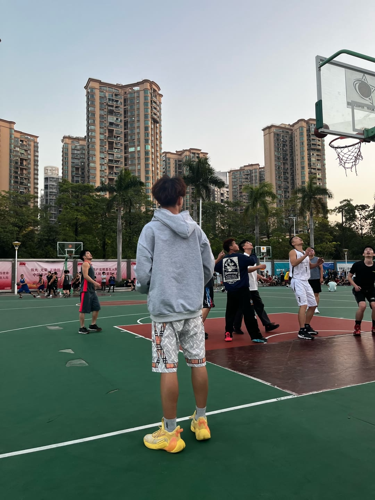

我第一时间甚至在想罚球是什么球型
想起来了，都想起来了，我是打篮球的[流泪] 
打羽毛球打框上了就说疵杆[流泪]
有多少人是这么个路线一路走来，足球，篮球，台球，麻将，钓鱼，可能是需要的队友越来越少的原因
看之前：我会骑自行车 看之后：略会一点[捂脸]
用户：你确定有人从这里过去过？ 高德：有的兄弟 有的
哥，求你了，骑的时候千万别开高德导航[我想静静]
留个句号。，几年后吓死自己[憨笑]
这一看就是到排卵期了[赞][赞]
有一次中午在很空旷的校园里，听到《倚栏听风》。妈呀，站那给听完了，真绝了好听
有人听过《我们都是好孩子》吗？
这首歌是她复出唱的歌，是写给歌迷的[玫瑰]～我很喜欢她，她有首歌《风含情水含笑》我的名字就是这么来的[呲牙]
了解了她的故事以后，这首歌也充满了遗憾和悲伤，不一定是那个人，而是属于岗岗的黄金时代也一去不复返了
看了杨钰莹和赖文峰的爱情故事，这几天一直循环《我在春天等你》 之前了解到庾澄庆和伊能静的往事，一直循环《春泥》
还有春泥 以前看跑男李晨老说春泥 没觉得好听而且感觉年代久远 自从了解过伊能静是什么心情下写出来的春泥 我真的觉得这首歌无敌[微笑] 听着都难过
！！！不要去美化那条没有选择的路哦， 在那个年代， 姐弟恋豪车百万追岗岗真的是真爱了， 而且少年心性是不可复制再生之物，两个人拥有了彼此最鲜活的时光，在彼此的记忆里，对方还是那个20多岁的样子， 就已经够了呀， 在一起了可能经过岁月柴米油盐的搓磨意难平也变成的蚊子血
扒了杨钰莹之前的恋爱史之后，再听这首歌真的很有感觉
“上跑道”[憨笑][赞]
“毁容，失去母亲，被迫杀死公寓的所有人包括自己的父亲，被罪恶感席卷，到最后坐在刑场上时，还是想成为一个善良的人吗，sally。”
我不，我要做错误的事情让别人痛苦万分
我不认为正确的事是牺牲自己成全他人
这位设计师肯定一定玩炫舞
我们不再讨论动物
[白眼]下面在弹琴 上面遮住的地方可以偷偷亲嘴
朋友：你跟你crush怎么样了[愉快] 我：We Don't Talk Anymore [憨笑]
我们不再唠嗑
真可怜 一个人长了三条胳膊[憨笑]
有人说 当真爱出现的时候 整个世界的时间都会暂停
吉他都有两个人谈，你却没人谈[看]
果然还是情侣弹的甜[黑脸]
这是弹琴吗……[微笑][微笑]真的不是调情吗[微笑][微笑][微笑]
我以为弹吉他就不会再受伤了[憨笑]
平常心是大网红 ，努力善良，待人真诚，去年高考有个学生要迟到了，他骑着摩托车给人家送到网吧去了
开心吗[微笑][微笑][微笑]
谁能想到现在安卓机的卖点是像果子[九转大肠]
Read more: